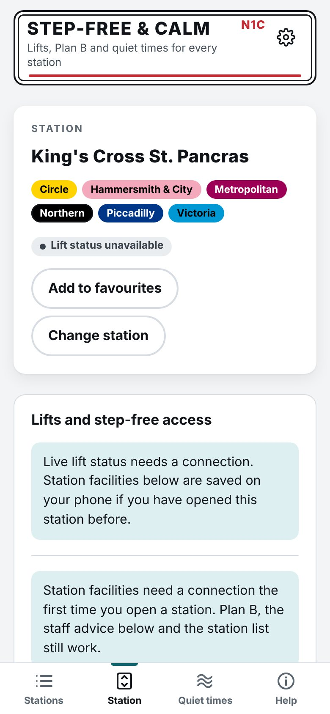

E16 · City and me
Report It Right
No wrong door: 20 situations routed to the right service first time, a 61016 text builder for British Transport Police, borough finder, quick exit.
Open appFive free apps for people who live in or visit London. Built from complaints and open data, not hype.
Six research teams read media coverage, surveys, company reports and civic apps from around the world. Judges scored 72 ideas on value to residents, value to the city, the gap they fill, feasibility, privacy and reach. Five track winners became working prototypes: installable, free, no accounts, no tracking.
No wrong door: 20 situations routed to the right service first time, a 61016 text builder for British Transport Police, borough finder, quick exit.
Open app
Harden your phone before you go out, see live police.uk theft hotspots, and follow a calm 15-minute plan in six languages if it's taken.
Open app
ETA: official or not; airport to central London without overpaying; contactless and tipping explained; emergency card in six languages.
Open app
Are the lifts working, what's Plan B, how busy is it now and when is it quiet, for any of 509 stations.
Open app
78 free places open near you right now, weather-aware, plus free water, toilets and libraries nearby.
Open appFigures come from web-search research with confidence marks; see the research folder before quoting them.